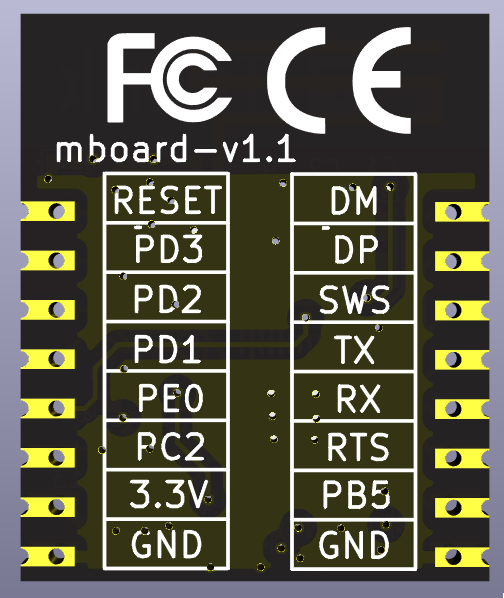
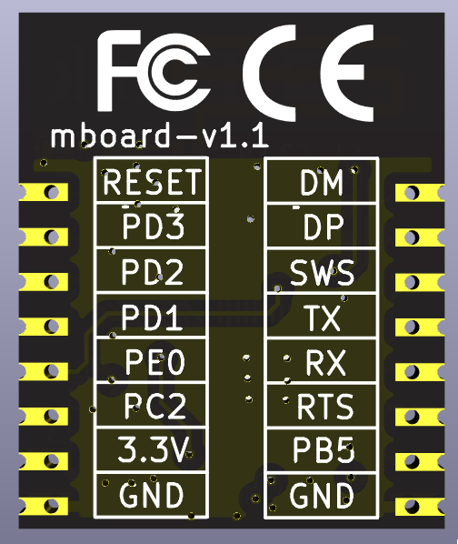

Mars_B91
模组介绍¶
Mars_B91
Mars_B91 是泰凌为推广芯片产品而生的一款模组板。其核心芯片为TLSR9218，当前版本为v1.1，支持ZigBee，BLE协议。只需下载现成的bin文件，即可通过uart来控制模组板。用户可以方便的进行芯片评估，也可把模组板集成到自己的电路系统中，为自己的系统扩展无线功能。
模组板的原理图、PCB图以及相关的BLE和ZigBee SDK应用代码、网页工具代码均为开源。在开发工具上，电路图绘制软件使用的是流行且开源免费的KiCad，芯片软件开发环境可去泰凌wiki上获取。另外为了方便用户学习和二次开发，模组板配套的各种上位机工具也用开源免费的工具开发。
模组板照片：
 

从上图可以看出模组板只留出了必要的接口，让接口尽可能的简单，接口定义如下：
| 左侧接口 | 功能 | 右侧接口 | 功能 |
|---|---|---|---|
| RESET | 硬件复位 | DM | USB DM |
| PD3 | GPIO/PWM | DP | USB DP |
| PD2 | GPIO | SWS | 下载调试 |
| PD1 | GPIO | TX | uart tx |
| PE0 | GPIO/PWM | RX | uart rx |
| PC2 | GPIO | RTS | uart rts/GPIO/PWM |
| 3.3V | 电源3.3V | PB5 | GPIO/PWM |
| GND | 电源GND | GND | 电源GND |
下图为素颜照，从照片看，模组板尺寸和一枚1元硬币差不多.
一个模组板的典型应用见下图官方底板，其中PC2连接按键，PD2，PD1连接拨码开关，UART TX，RX通过USB转串口芯片转为USB接口，可以直接连接PC

如何使用¶
- 使用Telink Buring Evk(调试下载器)，通过BDT或者Web BDT下载对应的bin文件到模组中
- 通过UART使用模组板
下载工具
模组构建为ZigBee网络¶
一个典型的ZigBee mesh网络如下所示，新设备入网时，网络中必须有一个coordinator设备：

Mars_B91模组板构建ZigBee网络步骤如下：
若使用旧版BDT工具进行下载，需先将下方固件下载到本地电脑端，若使用Web BDT，则可在线下载固件进芯片。
- 下载 Mars_B91_ZigBee_C.bin 到其中一个模块板(coordinator)
- 下载 Mars_B91_ZigBee_R.bin 到其他多个模块板(router)
- coordinator 设备先上电，此时模块板上led灯亮，表示允许其他设备入网（3分钟内）
- router 设备上电，router设备led闪烁，表示入网成功
- 组网成功后，通过UART发送数据即可实现广播或者定点传输数据（UART发送一笔数据最长64字节）
固件默认相关配置说明:
| 模组板接口 | 功能说明 |
|---|---|
| TX/RX | UART TX/RX，8数据位，1停止位，无奇偶检验，波特率默认为115200 |
| PC2 | 可接主控MCU，或者按键，上电初始化时需保持未按下状态 对于coordinator， 单击：限定时间内允许入网；双击：关闭入网许可 对于rounter， 单击：广播发送自身网络地址； 双击：广播用户自定义设备ID号；长按：恢复出厂设置 |
| PD2，PD1 | 模式配置控制IO（使用过程中可动态切换模式，切换间隔与按键长按的时间一致，默认为两秒）: 00: 广播透传模式，uart收到任何数据都通过ZigBee协议广播出去，收到数据的设备通过uart打印出数据 01: command模式，功能码使用示例见后面的描述 10: 定位模式，router收集移动模组定位数据，定期发送给coordinator 11: 移动模式，router定期广播自定义ID号 |
说明
- 设备广播自身的ID号时，广播数据中会带有头部 5A A5；
- 设备广播自身短地址时，广播数据中会带有头部 A5 5A；
- 设备广播自身长地址时，广播数据中会带有头部 A5 A5；
- 打开设置命令应答（默认关闭）后，command模式下，发送设置相关的command命令，设备返回的应答中会带有尾部 5A 5A；
设备出厂时的默认设定：
| 功能 | 默认设置 | 功能 | 默认设置 |
|---|---|---|---|
| UART回显 | 关闭 | UART波特率 | 115200 |
| 设置指令的命令应答(后缀5A A5) | 不添加 | 设备ID | 0x00 |
| 设备广播自身ID的周期 | 2秒 | PWM设定 | 不开启 |
| 短按检测时间 | 200毫秒 | 长按检测时间 | 2秒 |
| 单击按键后协调器限定的入网时间 | 180秒 | / | / |
| 入网时的触发IO | GPIO_PA5 | 入网时的触发IO的触发电平 | 低电平 |
| 死机时的触发IO | GPIO_PA6 | 死机时的触发IO的触发电平 | 低电平 |
透传模式系统框图如下所示

提示
上方介绍的是ZigBee透传模式，其他模式下的使用请点击ZigBee设备command模式下的配置
模组使用BLE功能¶
Mars_B91模组板上电后，即可被使用，通过对应的串口命令得到模组的信息，命令格式见：TLSR9218_module说明.docx。
Web BLE介绍
Web BLE是一款可与BLE设备通讯的网页的工具。模组板UART透传示意图如下所示

使用Web BLE与Mars_B91模组板通讯步骤如下：
若使用旧版BDT工具进行下载，需先将下方固件下载到本地电脑端，若使用Web BDT，则可在线下载固件进芯片。
- 下载 B91_ble_module.bin 到模组板中
- 打开网页 Web BLE
- 点击"scan"，连接名为"Telink_Mars_B91"的设备

- 第一次连接时，需要系统给连接权限，设备连接后，模组上的LED会点亮，网页端会自动打印模组的 service、characteristic、properties，点击 "show" 也会再次打印这些信息


-
点击 "send" 发送左侧输入框内的16进制数据给模组板，模组板UART会打印收到的数据
example:
Web BLE发送数据: 12 34 56 78 UART接收到数据: FF 09 A0 07 52 15 00 12 34 56 78 命令解析: 长度: 09 数据: 12 34 56 78 -
模组板会将UART收到的数据通过BLE发送给Web BLE，网页端会打印收到的数据以及characteristic的UUID
example:
往模组板UART发送数据: 1c ff 05 00 11 22 33 44 55 命令解析: 长度: 0x0005 数据: 01 02 03 04 05 UART返回数据: FF 03 1C 07 00 Web BLE打印数据: 00010203-0405-0607-0809-0a0b0c0d2b10 Received: 11 22 33 44 55 -
点击 "clear" 清空页面显示窗口内容，点击 "name" 打印模组板的名称，点击 "install" 可将网页以原生应用的方式安装在电脑端。